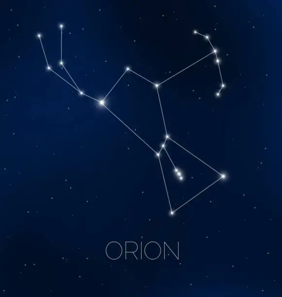

🎯Nhiệm vụ: Quan sát các ngôi sao sáng trên bầu trời và nối chúng lại để chiêm ngưỡng chòm sao Thợ Săn(Orion)
Thợ săn đang căn chỉnh mũi tên....0%

Ba ngôi sao ngay hàng thẳng lối
Tựa chiếc đai thợ săn gan lì
Tay trái đỏ rực trên trời
Chân phải xanh sáng, chiếu soi đêm dài.
Bốn ngôi bao bọc lấy ngài
Ba ngôi chính giữa, thành hình thợ săn.

Chòm sao Thợ Săn (Orion)Chúc mừng nhà thiên văn học tập sự! Bạn đã thắp sáng thành công Thợ Săn (Orion) — một trong những chòm sao nổi tiếng và dễ nhận biết nhất trên bầu trời.